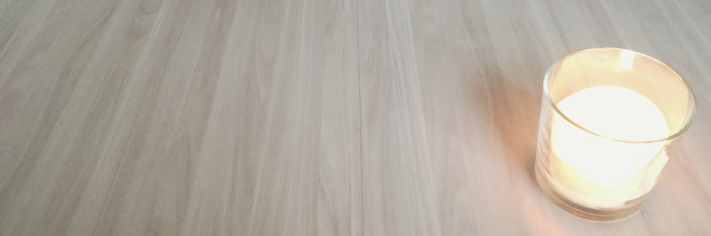

Moving to a new place and creating your own space
How to slowly make it feel like home
Moving to a new place is always a bit painful, it means a lot of packing, cleaning, carrying and exhaustion. But it also gives you the chance to have a fresh start and create a new space that will then, be your new home.
When it gets to the moment you are about to move, you just wish that you own less stuff so you don’t have to carry so many things and everything could go quicker and smoother. But that’s usually not the case and moving can take even weeks or months.
Last month we moved to a new place, finally an apartment where we are going to start creating our first home. Moving was simple as the only furniture we had was one chair and an inflatable twin bed where we slept on the first week. The previous apartment was mostly furnished, so we managed to move everything just by using the public transportation. As it was winter, walking through the snow with a bunch of suitcases and backpacks was, again, quite exhausting, but we made it in around 4 or 5 trips.
The first weeks we basically lived in a blank space, our furniture from IKEA took more than 2 weeks to be delivered. We were having our meals on the floor, and all our clothes were stored in two plastic boxes, while the rest remained in the basement. And of course, no internet connection for at least 3 weeks. That was our least favorite part, for sure, but all the experience was worth living. It gave us an overall idea of how the space was, and what things we really needed in order to improve our lives and make us feel more comfortable.
Having the chance to live in an empty space has the power to increase your creativity, by imagining how you want your house to look like and then slowly make it happen. Based on that, even though we already have bought the furniture, we understood what our needs were so we didn’t have to buy useless stuff that would actually add more clutter and hurt our budgets as well.
Now after having assembled most of our things, everything looks brighter and is comfortable for us. Some people freak out due to the bare white walls, lack of paintings,lamps or decoration, but pushing everything to be completely done super quickly will end with a result that you might not like after all. Those small details will come later, when you home had the chance to evolve as your life goes on. The beautiful brightness of that empty wall represents all the new things happening to you life and everything that is yet to come.
But before jumping in and buying everything, try to keep these things in mind:
What you would actually need to be able to live comfortably at least for the first few months?
A place to sleep, another one to eat, light and enough place to store your most frequently used items. That’s without taking into account a kitchen, refrigerator and washing machine.
Understand your budget and buy you new furniture according to it.
Make sure that those basic items have the style that you will like to have your house overall. It doesn’t have to be expensive or the best quality of all, but at least make sure that you find this style beautiful.
Don’t worry if you’re confused on what you have to buy. Identifying what you’re actually missing will come as soon as the necessity arises. Then go and buy just one important item every one or two months. Slowly, make sure that you know what you want and you don’t end up with a bunch of things you’ll want to throw away in the blink of an eye.
Keep learning and improving your home so it suits your lifestyle. A home that makes you a more productive and calm person. Create that space that is able to soothe you after work, instead of somewhere that adds more stress to your daily life.
An apartment or house that needs less cleaning and organizing will give you some extra free hours to take care of more important things in your life. So have clear surfaces, less stuff, avoid things that accumulate dust and keep your shoes in the entrance.
If it feels too empty, you can always spice it up by lighting some candles or buying a small plant.
Every 6 to 12 months revise your space. Donate, sell or give those things away.
Don’t freak out about the number of items you currently possess, if you have a bit more that’s fine, everyone has different needs, and the real goal is to enjoy and feel comfortable in the space you live in.
Time will help you in creating a space that will slowly feel like home, a place that at the beginning might look unfamiliar and empty will become the stage where lots events of your life will happen. Don’t rush and be grateful of those 4 walls and the ceiling that surrounds :)
Gallery
Here some pictures on our current status. First picture was the empty living room at the beginning. Then how the bedroom and living room are currently looking. Quite simple and easy to maintain!